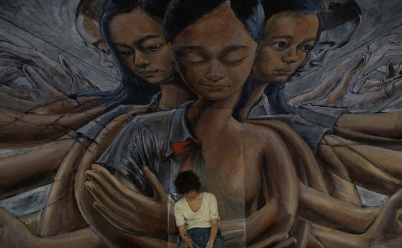

深圳，加油！！单身狗立flag

-
我跟罗总、成成 毕业相约去深圳，在大都市工作我是一直都很向往了
可能是小时候港剧看多了，向往那些充实的生活
为了能在深圳站住脚，我这一点点的前端知识是无法立足，加油招君！
------------------------------------------------------------少不入川
上传者：招君 日期：2017.3.30 地点：A区图书馆
-
我一直向往的不是拿着那死工资，我想干得多就赚得多，自由经济下的工作一直很向往，可能刚起步能力得不到深圳的要求，深圳，我认为中国民营IT公司很多在那生根发芽，罗总准备毕业一年就买奥迪A4L，很佩服他的理想，自己赚10万，家里出10万，直接怼奥迪；庆幸的是，如果到时候我还跟他一起合租，我就可以每天搭顺风车了，每个月给他拼车的钱，可以不去挤公交地铁，放假还可以自驾游~还有我们的成成....罗总想开一家毛衣品牌店，我们店名都想好了，我注册了公司域名，也弄了初步的公司网站，打几年工，开始资本原始积累，拿着钱下海，就算生意失败也可以回到可能不熟悉的IT行业，当蓝领也好白领也罢...不可活得像咸鱼一样。。。keep moving~
-----------------------------------------------------------------------------------Don't allow fear of failure to stop you.
罗总其实也不喜欢跟他俩去

-
我说罗总，为啥之前你不去游历？
他：我说去的话，寝室那些人也跟着去，我不喜欢跟他们去
跟那些太过以自我为中心的人去游历是没有mood的~
-------------------------------------少不入川
上传者：招君 日期：2017.3.29 地点：哈商大A区图书馆
-
其实老贺和鑫总为人还是不错的，只是在有些方面比较不会顾虑别人的感受，比如鑫总：他大大咧咧，说话比较直，在寝室看电影放音乐，有时候让他戴耳机听声音，他却说：戴耳机不舒服，那我们听得也很不舒服，鑫总性子急，没耐心，罗总说他逛街不愿意逛得长，怕辛苦？至于老贺，可能比较霸道，有时候直接按照自己想法去做，感觉他以后是个大老板？哈哈~还有就是罗总说老贺在寝室搞火锅的时候，自己喜欢吃麻油，就直接买麻油，我们的意见是买蚝油就行了，他偏要麻油，可能这就是单生子女的小缺点？不会顾及旁人感受？上次，罗总在我去沈阳前说，最好别去，男女同居容易发现对方的小毛病，缺点无限放大，会导致分手的，果不其然，他说对了，我潜在的缺点可能被她发现并不满了；这次横道河子会不会让我跟罗总友谊到此结束？
-----------------------------------------------------------------------------------Don't allow fear of failure to stop you.
罗总说带我散散心

-
有此基友，大学已足矣
横道河子，牡丹江，我俩来啦~
远离大都市，返璞归真才是真美~
-----------------------------------少不入川
上传者：招君 日期：2017.3.28 地点：哈商大A区11公寓626
为足球队写了个官网

-
讲道理，花了半天弄个官网，我这官网配图真low
为了以后有个念想，这个官网还是可以保留的
重要的是，不仅仅广州恒大也有官网，我大计院也有官网
----------------------------------------------------少不入川
上传者：招君 日期：2017.3.27 地点：哈商大A区图书馆
大学恋情终篇
- 
-
大学谈了4段恋爱，全部被女生抛弃，被甩次数终结在6次；
为了活得能被自己看得起自己，此独白的感情篇终结在这一天...
-----------------------------------少不入川
上传者：招君 日期：2017.3.26 地点：哈商大A区11公寓626
-
第一段，她是哈尔滨本地人。我真的没意识到的，e家开完会我跟顺溜和她们一起往回走，快走到17公寓的时候，她突然凑到我耳边说：我喜欢你...我愣住了，她飞快的回寝了，顺溜跑过来问我咋地了，我就如实说了，然后我答应她了，那段日子带她去上晚自习，带她去图书馆，教她做高数题，我以为她就是我 大学的唯一了，e家第二次开会结束后，她又凑到我耳边说我眼睛大...这撩我的方式有点主动啊~第一次她主动跟我提出分手，原因我不知道，随后我也没啥想法；过了几天她说她还想着我，然后我们复合了，我继续的被动....其实我也不知道我这人是怎样的，一起呆了几天，又分手了，还是她提的，问原因她也不说，我貌似觉得自己是备胎了？又过了几天。她又说我们复合吧，那时候跟罗总说，罗总说：什么鬼，这女的脑子被砸了？我的足球新生杯的衣服印着她的中文拼音缩写（LDR），她去看了一场我的比赛，那场比赛，是我所有场次表现最好的，后来分了，经历三次分手，我觉得太不可思议了
第二段，电视台的，她来自唐山。其实真正意义上不算一次恋爱，不过我还是把它列出来吧，电视台聚餐，我们喝到11点，我负责扶她回寝，雪地路滑，我们摔倒了，等回到寝室，她说她手机掉了，我下楼叫阿姨起床，乞求阿姨开门让我出公寓，后来在那摔倒的地方找到那部手机，然后回寝跟她说明情况，手机屏幕有点变色，估计是低温损毁了，她说很感谢我，然后我开玩笑的说当我女朋友吧，她说好的，也算是狗血的剧情了，由于没有感情基础，加上她对她前任没有死心，然后就草率的分了。
第三段，选修课，她来自株洲。罗总突然心血来潮说要找女票，然后锁定目标，在第二次选修课的时候问那个女生的QQ，结果那个女生好像很抗拒，来自株洲的那个女生的室友就说了自己的QQ，然后罗总有个台阶下，她挺好心的，然后我加了她，聊了起来，觉得她挺符合我要求的，然后我就展开一系列主动的攻势，在聊天的两周后，我表白了，她说：她没有心理准备，她想跟我当朋友，说我们没有感情基础，我说我等她，她第二天同意当我女朋友，那天我很开心，第一次约她出来，我捏了她脸，哈哈，好喜欢这种感觉，处了很久，我觉得她是我唯一了，但是她有时候对我有些莫名的疏远....我不知道她是怎样想的，她室友临时有事不去旅游，我就第一时间提出来我陪她去，那个沈阳游，因为我那傻傻的光头，导致我不怎么拍照，可能她有点不开心吧，唉~毁于心血来潮的光头。。。。回到学校，我带她去看足球，她不怎么乐意，可能是学业繁重吧，来到球场，她竟然不进去看，我生气了，回寝室我拉黑了她，我只是想冷静一些，结果她提出分手了，我有点失措，不知怎么办，我说我不是想分手的意思，她说就这样吧，难道她一直都在找机会分手？她说对我没有恋人的感情，我真的很伤心，半年了，现在跟我说对我没感觉。。。。我平时不会花言巧语，我只想让我成为我心目中那理想的另一半，带她回来见父母（第一个让我想带回去见父母的女孩），可能是我逼得太紧了，现在看来，我也不应该这样外貌协会，整天说她小腿粗，可能是真的伤害到她了，她说我们可能不成为恋人，可以成为朋友的；其实，我觉得我有点像我爸了，对自己亲密的人没有像朋友那样好，她，让我想要改变自己，分手后的几个月，有时候会突然想起她的一些片段，可能这大学留给我的这段伤痛需要更多的时间去消化；只可惜一切晚矣，愿她找到更好的另一半，逝去的恋人朋友。
第四段，她来自吉林扶余，她是个大大咧咧的女生，她在我失恋的时候来到我身边，我以为她可以代替她，结果我想错了，她代替不了她，没有接吻只有牵手的一段朋友式的恋情，因为我的自私，她多次让我跟她用情侣头像，让我在自己的朋友圈秀她，但是我不太愿意，（途中一段时间我还是妥协用了头像了...）可能她也感觉到了，她向我提出了分手，我们没有撕破对方的最后一道衣裳，留给对方体面的离开，感谢她；她最后还说：我觉得我挺对不起你的，觉得自己很渣，你很好，对我也很好，到时我，对不起，我们分开吧，对不起，你值得更好的。她首先跟我说出这段话，其实这段话更应该是我这个渣男跟她说的：我觉得我挺对不起你的，觉得自己很渣，你很好，对我也很好，到时我，对不起，我们分开吧，对不起，你值得更好的。我跟她在一起的时候还想着前任的事，我这种精神出轨真的是罪大恶极，没办法？真的是自己喜欢的不喜欢自己，不喜欢的却爱着我？祝她能找到真正对她好的男人。
-----------------------------------------------------------------------------------Don't allow fear of failure to stop you.
原来是足球队大一...

-
翻了翻微博...
互动频繁，看来已有人选了
就这样吧，让我忘了从未把我放心上的女生
之前的一切一切，都终结在这一天吧....
------------------------------少不入川
上传者：招君 日期：2017.3.26 地点：哈商大A区主楼